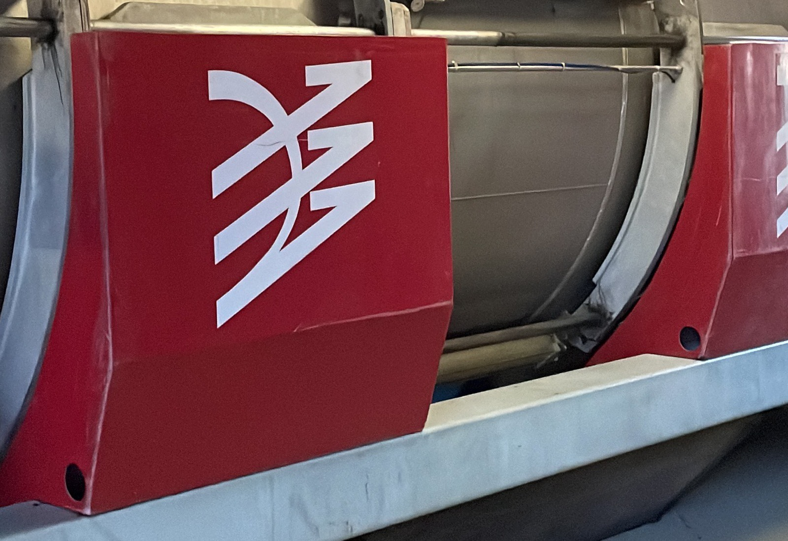

Dégustation
Découvrir les cuvées avec leurs vrais repères
Brut Tradition, Rosé, Demi-Sec: chaque cuvée retrouve sa place et son usage.

Découvrir la maison sur place, à Channes, en Côte des Bar.
Brut Tradition, Rosé, Demi-Sec: chaque cuvée retrouve sa place et son usage.
Cuvée, cadeau, événement, achat sur place: tout part d’un échange clair.
Les rendez-vous permettent un accueil plus calme et mieux préparé.
Une première approche du style de la maison et des cuvées.
Pour replacer la dégustation dans le lieu et dans le rythme de la maison.
Pour un cadeau, un mariage ou une commande plus importante.
Laissez-nous quelques repères, la maison revient vers vous pour confirmer ou orienter la demande.
4 rue de Villiers, 10340 Channes
Les rendez-vous dépendent des disponibilités de la maison.